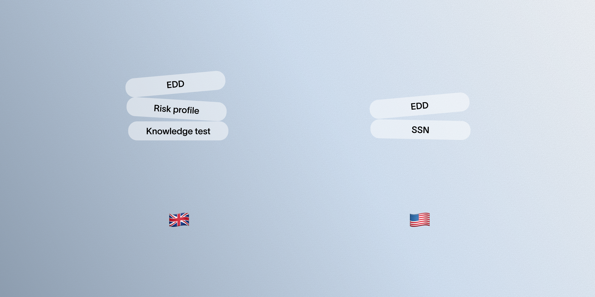
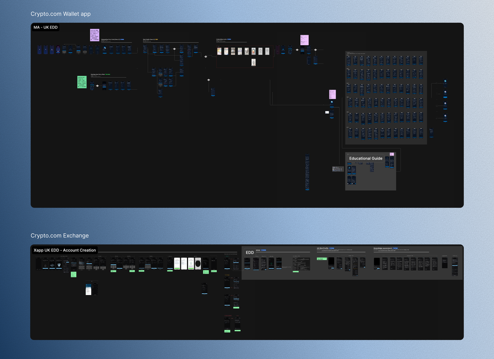
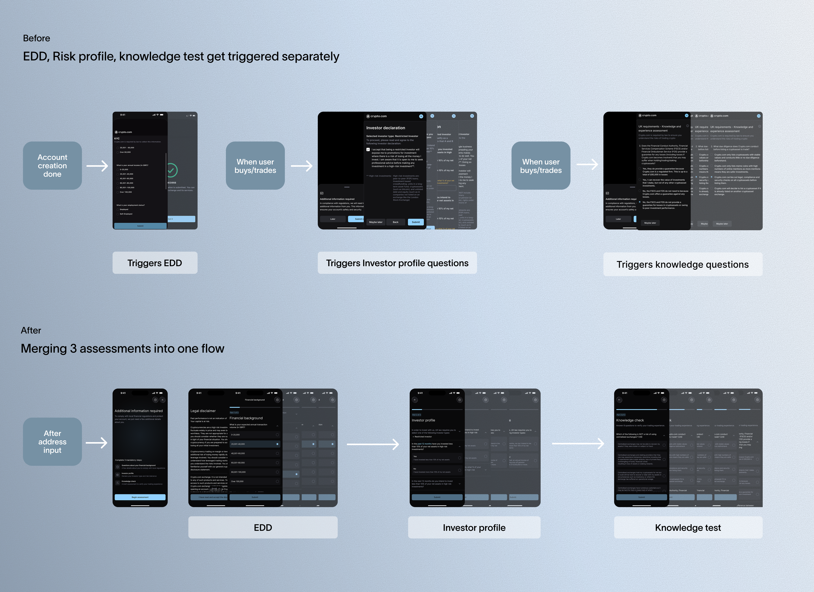
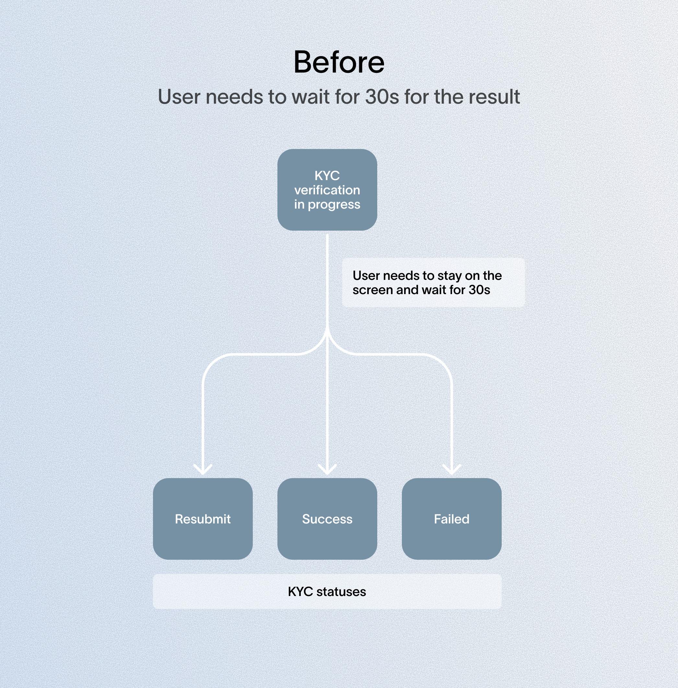
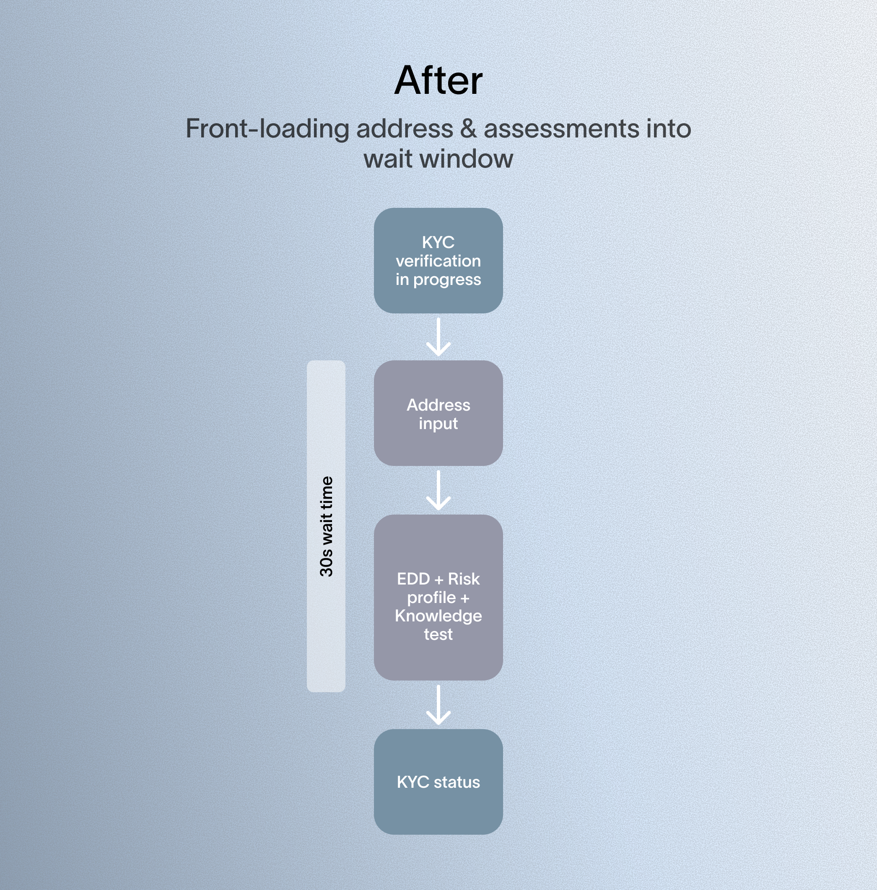

KYC EDD (Enhanced Due Diligence) flows currently differ by region, each built independently over time as regional requirements came up, without a shared template to work from. Implementation is inconsistent too — some flows are native, some are webview.
- EDD requirements were added after the original KYC onboarding was already built, so today's EDD flow triggers as a separate step after onboarding is complete, not as part of it
- Requirements vary by region — UK has the most steps of any region
- As a result, EDD generally sits outside the core KYC flow rather than being integrated into it
How might we streamline KYC EDD across regions for a consistent experience, and reduce friction given EDD is mandatory and can't be skipped?
This project prioritized UK and US:
- UK — longest EDD flow of any region; the only region requiring risk profile and knowledge assessment beyond EDD, totaling three assessments and 17 questions
- US — our largest overall user base
We also referenced competitors' UK EDD flows for comparison.

Before proposing changes, I audited our existing KYC EDD flows across regions to understand current limitations and the reasoning behind past decisions. I also reviewed the Crypto.com app's EDD flow — both its overall structure and its approach to SSN collection — and spoke with their PM to understand the reasoning behind their design decisions, using it as a reference throughout the redesign.
Alongside the audit, I conducted user interviews with two participants, which surfaced specific findings referenced in the issues below.

For UK, EDD, risk profile, and knowledge assessment triggered separately at unpredictable points after KYC, creating a disjointed experience, so I merged them into one upfront assessment.
EDD, risk profile, and knowledge assessment were originally split into three flows with separate entry points, based on the assumption that showing steps only when needed would reduce upfront friction and let users start browsing sooner. I merged them into one continuous assessment instead.
In practice, triggering these assessments at unpredictable points created a more disjointed experience, not a lighter one.
A UK user interview confirmed this — he accepted EDD itself as standard across banking apps, but found being interrupted by unrelated questions more frustrating than the form's length. Combining the three into one upfront assessment set clear expectations and removed the surprise factor, trading three short interruptions for one longer session.

Users sat idle up to 30 seconds during the mandatory identity verification wait, while address/SSN collection was deferred until funding, and EDD-related assessments sat as separate blockers elsewhere in onboarding. I used the wait window to front-load both.
Two approaches were possible for address/SSN:
- Delay (existing approach) — collect address/SSN only when the user triggers bank-transfer or credit-card funding
- Front-load — collect them during the wait; since this info is needed regardless once users fund in, doing it upfront avoids a second friction point later
I front-loaded assessments too — EDD for US, and EDD, risk profile, and knowledge test for UK — into the same wait window, clearing these blockers early so users can access the rest of the product without interruption afterward.


For address collection specifically, I also added Google-suggested autofill, speeding up entry compared to the static form previously in place.

A user interview reinforced the opportunity: one participant described sitting on the loading screen unsure whether to quit or stay, since the wait had no clear purpose — creating abandonment risk.
This diverges from Crypto.com's approach, which gates SSN to only the specific features that need it — we front-loaded instead because SSN will soon be required broadly for a major upcoming product feature.
Each region's EDD flow was a one-off build with no shared structure, making updates and rollouts costly, so I designed a standardized, reusable EDD template.
Format: Questions collapse and auto-advance once answered; the same pattern applies across all regions, with only question content changing per region. This got an early real-world test when Issue 2's SSN requirement forced US into its own flow — since the structure was already standardized, this only meant adding US-specific questions, not building a new flow from scratch.
UI: Compliance required keeping assessment copy exactly as-is, so I focused on structure instead — progress bars on longer flows, and clearer hierarchy for dense text blocks.
Technical pushback: I proposed native over webview, since webview looked visually detached from the rest of onboarding. Tech pushed back — webview is faster to update for compliance changes — so we kept webview and closed the visual gap through UI work instead.

Copy was the one lever I couldn't pull. Given more room, I'd push to test shortened, more scannable copy — potentially as a controlled test to build a data-backed case for compliance to revisit the wording. Long, dense text is still the biggest usability barrier left in this flow.
The redesign more than doubled UK EDD completion, while making the flow cheaper to extend and the wait time worth something.
UK EDD step completion rose from 23% to 54% over three months — the strongest test case, since UK has the longest EDD flow of any region.
The reusable template meant US only needed new question content for its own variant, not a new flow.
Moving address, SSN, and assessments into the verification wait turned idle time productive, instead of adding separate steps afterward.